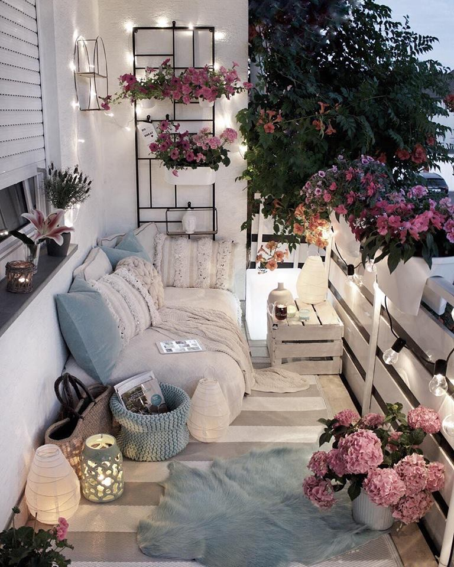
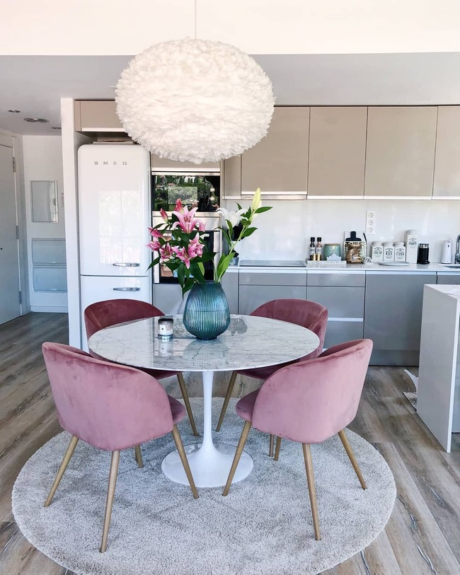

Failu keliu nurodymai
Nurodant aplanko varda - nueinama i nurodyta aplanka
Norint atlikti sekanti veiksma - reikia parasyti " / "

Norint zengti zingsni atgal i aplanko - reikia parasyti " .. "
Puslapio struktura
- header - puslapio virsus, kuriama nurodoma informacija apie puslapi / menu
- nav - skirtas kurti puslapio menu
- section - didziule puslapio dalis
- div - maza puslapio dalis
- article - main dalyje esanti sekcija
- footer - puslapio apacia, kurioje yra ivairi info : terms, privacy policy, copyrights, links, parteniai, remejai....
Display - Inline, Block, Inline-block
Inline
Inline elementai yra tokie elementai, kurie uzima tik tiek vietos ekrane, kiek jiems reikalinga. Minusas tas, kad negalima keisti siu elementu dydziu. Pliusas tas, kad jie labai lengvai itelpa i bet kuria puslapio vieta.
Tagu pvz: a, span, img, input, button, label, select, textarea, cite ir t.t.
Block
Block elementai yra tokie elementai, kurie uzima visa leistina ploti ir neisileidzia kitu elementu i ta pacia eilute. Minusas tas, kad uzima visa leistina ploti. Pliusas tas, kad galima keisti ju dydi.
Tagu pvz: h1-h6, p, div, section, main, article, nav, ol, ul, li, hr, blockquote, aside, canvas, table ir t.t.
Inline-Block
Inline-Block elementai yra tokie elementai, kurie pasisavino geriausias Blokiniu ir Linijiniu elementu savybes. Jie uzima tik tiek vietos kiek jiems reikia, bet ju dydi vie tiek galima keisti.
Model Box
Margin - atstumas nuo elemento remelio iki aplinkiniu elementu remelio. Skirtingu elementu virsaus ir apacios marginai persidengia.
Border - remelis, kuris yra tarp margin ir padding.
Padding - atstumas nuo elemento turinio iki elemento remelio.
Content - elemento turinys. Blokinio elemento turinys uzims visa leidziama eilute arba nurodyta dydi.

Galime aprasyti Margin, Border ir Padding nustatymus 4 skirtingais budais:
Vienas matmuo visom 4 krastinem (margin: 50px)
Rasant du matmenis - pirmasis virsui ir apaciai, antrasas sonams (margin: 20px 50px)
Rasant tris matmenis - pirmas virsui, antras sonams, treciai apaciai (padding: 20px 50px 30px)
Rasant keturis matmenis - pirmas virsui, antras desinei, trecias apaciai, ketvirtas kairei (padding: 10px 20px 5px 15px)
Galima nurodyti, kuria krastine nori stilizuoti. (border-right-color: orange;)
Toggle mygtukai - JavaScript
